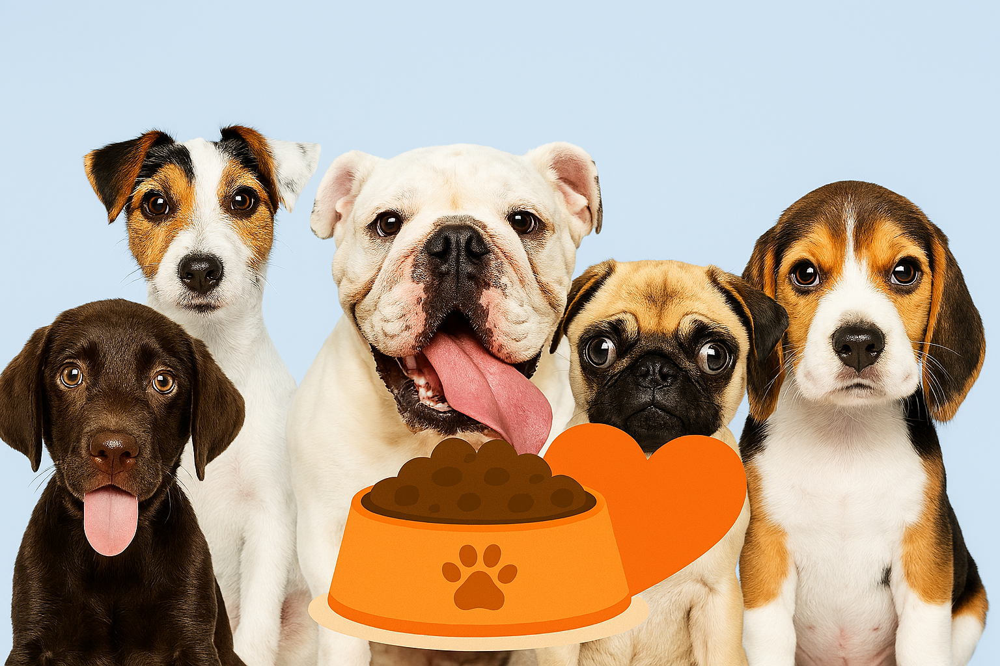
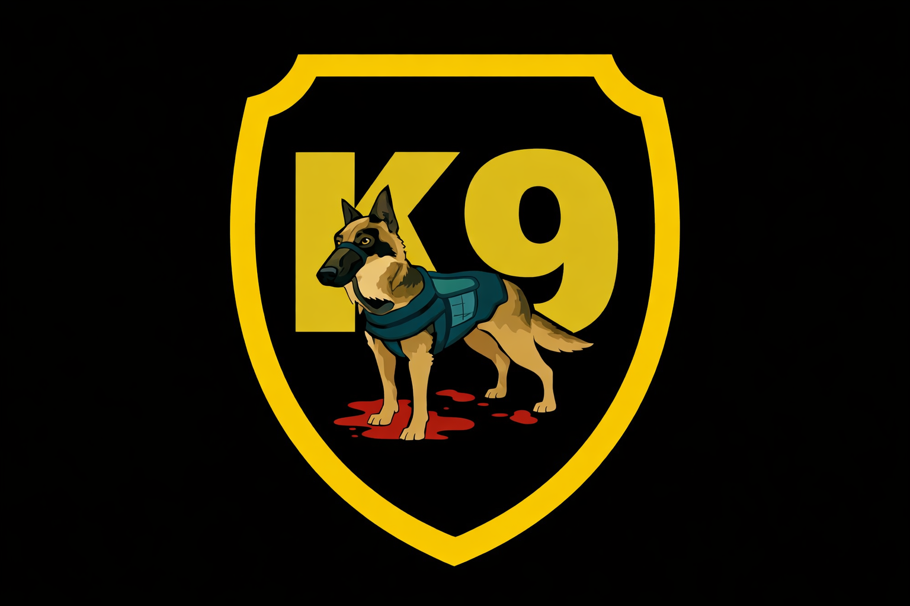
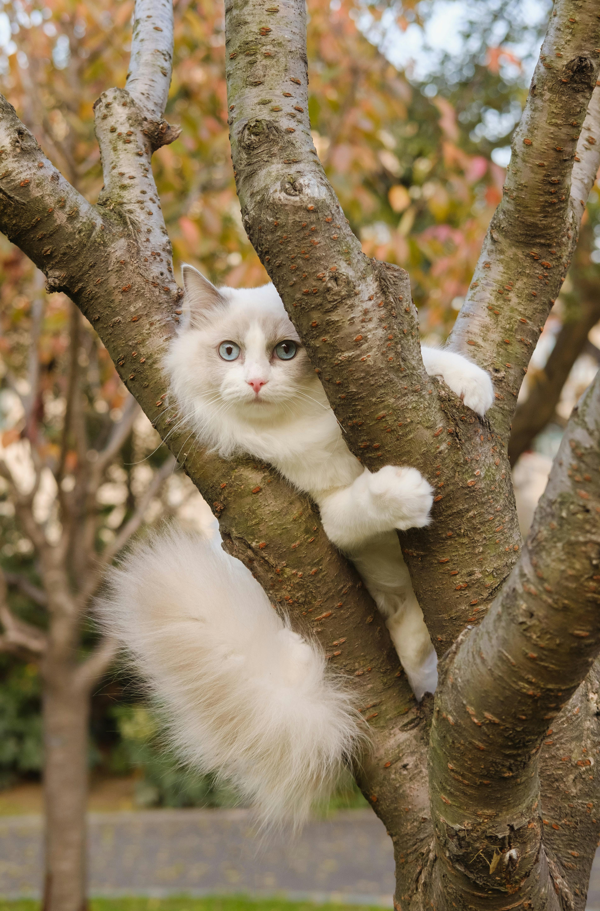
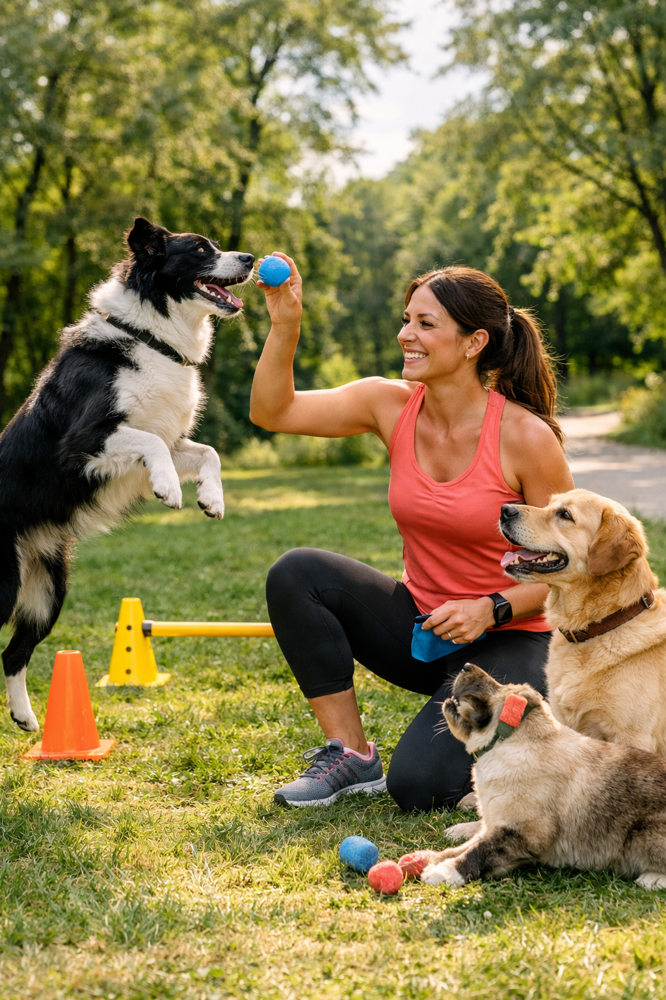
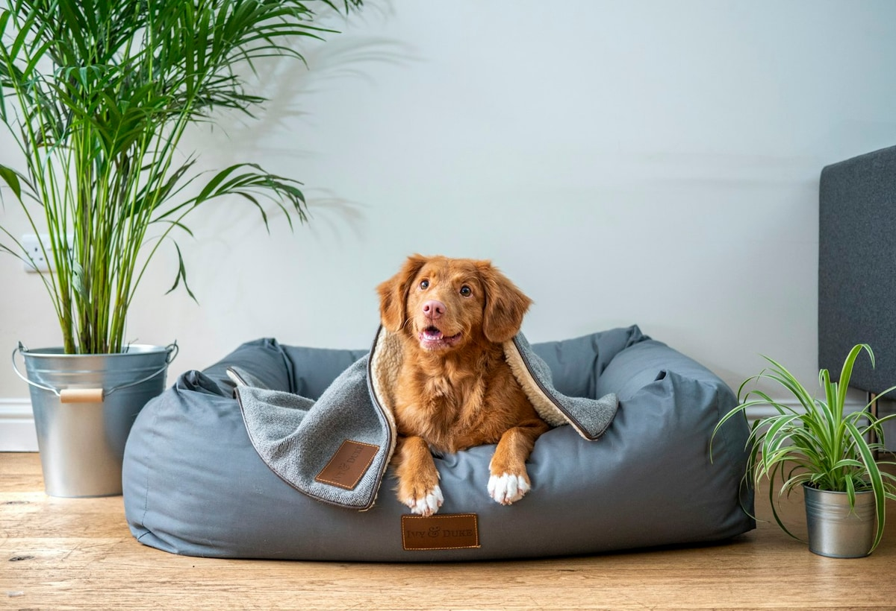
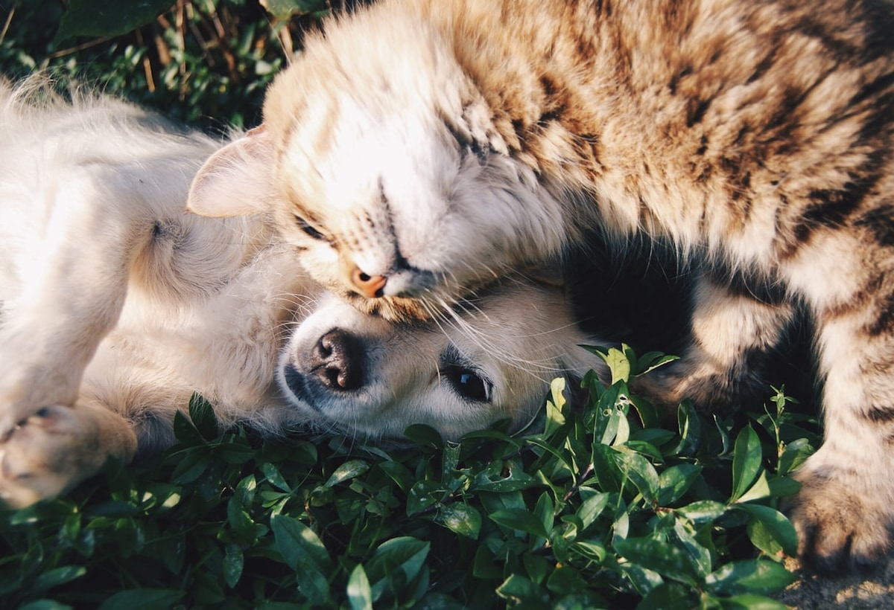
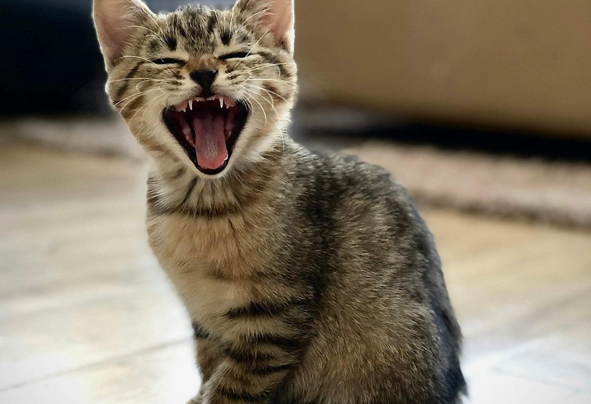

Campanhas Ativas

🐾 Campanha: Alimente o Amor
Milhares de focinhos esperam por um gesto seu. Doe ração. Doe esperança. Juntos, podemos encher potes e corações.

Milhares de focinhos esperam por um gesto seu. Doe ração. Doe esperança. Juntos, podemos encher potes e corações.

Eduque seu pet com paciência e amor. Adestramento transforma comportamentos e fortalece a relação entre você e seu companheiro.
Ver dicas de adestramento →
Espalhe cartazes com foto, nome e telefone. Use redes sociais e grupos locais de proteção animal.
Ver todas as dicas →O PetConecta é uma iniciativa extensionista com compromisso social: apoiar tutores na localização de pets desaparecidos e fortalecer a rede de proteção animal da comunidade. A página foi criada para facilitar o cadastro e a divulgação rápida de ocorrências, reunir informações em um mapa de apoio a buscas e aproximar pessoas que podem colaborar com avistamentos e reencontros. Além da função de busca, o projeto também tem cunho educativo, com conteúdos sobre saúde animal, zoonoses, prevenção, bem-estar e guarda responsável. Nosso objetivo principal é transformar informação em ação, conectando tecnologia, cuidado e participação coletiva para reduzir o tempo de desaparecimento e aumentar as chances de cada pet voltar para casa.
Cada compra gera uma doação para cães e gatos resgatados.
Distribua por ruas próximas, comércios e postos de gasolina
📥 Baixar ModeloCompartilhe em grupos locais, comunidades e perfis de proteção animal
Aumente a visibilidade alertando a comunidade do sistema




Atenção redobrada e socialização precoce.

Camas macias, rampas e rotina tranquila.

Suporte veterinário e atenção contínua.
Se seu pet ingeriu algo tóxico, procure um veterinário imediatamente.
Ver Veterinários 24h“Cada clique pode mudar uma vida.”
“Adotar é multiplicar amor.”
“Seu lar pode ser o recomeço de alguém.”
🔴 Desaparecidos 🟠 Desaparecidos: encontrados por terceiros - aguardando devolução 🟢 Devolvidos / Encontrados
Números atualizados automaticamente a partir dos registros da plataforma.
O Peregrinos Vet atua com foco em medicina veterinaria do coletivo, com conteudo educativo e frentes importantes como zoonoses, castracoes, leishmaniose e prevencao da raiva.
Conhecer perfil do Peregrinos VetConteudos de orientacao preventiva e impacto na saude coletiva para tutores e comunidade.
Ver destaque no Pelegrinos Vet →Iniciativas que apoiam controle populacional e melhoria da qualidade de vida dos animais.
Acompanhar acao de castracoes →Materiais educativos sobre zoonoses, prevencao de raiva e boas praticas de cuidado no dia a dia.
Acessar informes publicados →Se você representa uma ONG, clínica veterinária, pet shop ou deseja apoiar nossa causa, entre em contato!